SAPS: Shared Autonomy for Policy Steering by Blending Teleoperation with a Pretrained VLA
Anonymous Authors
During VLA rollout, the policy frequently executes actions that lead it out of distribution, or cause it to
perform the wrong task. Through SAPS, the user introduces a guiding
perturbation that leads the VLA back within distribution to perform the task.
Abstract
Recent advancements in Vision-Language-Action (VLA) models have demonstrated impressive generalist
capabilities in robot manipulation, yet these policies can be brittle under out-of-distribution spatial and
semantic perturbations. While human teleoperation offers reliable recovery, it can demand high cognitive load
and precise manual control, and existing policy steering methods often require auxiliary models or sampler
modifications. In this work, we introduce Shared Autonomy for Policy Steering (SAPS), a framework that blends
real-time human teleoperation commands with pretrained policy actions at the action level. SAPS requires no
policy retraining, auxiliary dynamics models, or architectural modifications. We propose and evaluate three
arbitration strategies to balance human and VLA policy control, including a dynamic Cosine-similarity
arbitration strategy that computes the geometric agreement between human and policy actions. Across
evaluations in simulation (LIBERO, LIBERO-PRO, CALVIN) and on real-world robot hardware, SAPS improves task
success rates over autonomous execution by up to 82% in both simulation and the real world. Furthermore, our
approach drastically reduces human intervention compared to pure teleoperation, while simultaneously achieving
faster task completion times than both autonomous execution and pure teleoperation. These results demonstrate
that action-level shared autonomy is a practical, model-agnostic approach for reliably deploying generalist
robot policies in real-world contexts involving a human operator, with promising applications in assistive
teleoperation and scalable data collection.
Method
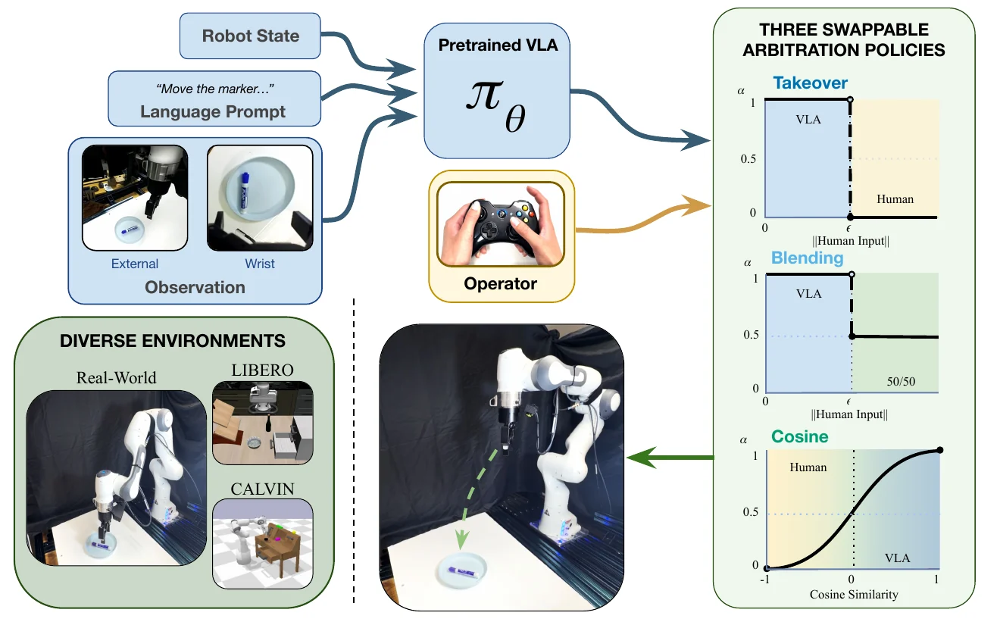
Figure 1: At every control step, the VLA backbone
\(\pi_{\theta}\) takes in the camera frames, robot state, and language prompt to propose an autonomous
action. In parallel, the operator may supply a teleoperation action. We compare three VLA-operator
arbitration methods that produce \(\alpha\): a Takeover arbitrator, a Blending arbitrator outputting a 50/50
blend, and a Cosine-similarity-weighted sigmoid driven by the two actions.
[PDF]
Policies
Experiments use pretrained π0.5 Vision-Language-Action policies
finetuned on the LIBERO, CALVIN, and DROID datasets. For CALVIN, to compare with previous baselines in
DynaGuide [3] and ITPS [4], we also evaluate a diffusion policy (DP)
released with open-source weights in DynaGuide [3]. The policies receive RGB observations
from both a third-person camera and a wrist-mounted camera along with proprioceptive robot state information.
At each replan step, π0.5 and DP predict an action chunk of future
actions, from which the first \(N\) actions are executed before replanning.
Shared Autonomy Arbitration
Let \(\mathbf{a}_{\textit{expert}},\ \mathbf{a}_{\textit{VLA}} \in \mathbb{R}^7\) denote the expert and
policy actions, where the first 6 dimensions correspond to translational and rotational end-effector motion
and the final dimension controls the gripper state. The final blended action executed is computed as:
where \(\alpha \in [0, 1]\) determines the degree of autonomy. When no human input is detected,
corresponding to the L2 norm of the expert action falling below a threshold \(\epsilon = 0.001\), the robot
policy retains full control with \(\alpha = 1\). The gripper state is handled separately:
allowing either the operator or the policy to initiate grasping. This prevents interference between
opposing gripper commands during shared control, with an overriding bias toward closing the gripper.
Takeover arbitration
Takeover arbitration allows the human operator to completely override the VLA policy whenever active
intervention is detected. Intervention is determined using the magnitude of the expert command:
Unlike continuous blending approaches, Takeover uses hard switching between autonomous and human control,
allowing the operator to fully correct undesired policy behavior during execution.
Equal blending between policy and teleoperation
Blending performs continuous arbitration between the VLA policy and expert teleoperation. During active
human intervention, a fixed arbitration coefficient of \(\alpha = 0.5\) is used, producing equal contribution
from both the VLA and expert. When no expert input is detected, the controller transitions to full autonomy
with \(\alpha = 1.0\):
This method uses a dynamic \(\alpha\), rather than a fixed blending coefficient, to adapt the autonomy
level based on policy confidence \(c\). Specifically, \(c\) depends on the directional agreement between the
expert and policy actions. At each step, we measure directional agreement via cosine similarity:
The cosine similarity is assigned an agreement score \(\gamma \in [0,1]\) through a logistic transformation
that increases sensitivity near regions of disagreement while saturating for highly aligned actions:
The agreement score determines the arbitration coefficient, \(\alpha = \gamma\). This formulation enables
smooth, continuous transitions between human and autonomous control, allowing corrective intervention while
preserving stable behavior. It also allows for other confidence-based metrics \(c\) to replace
\(\cos(\theta)\) in future work for arbitration.
Experimental Setup
Evaluation environment
Simulation experiments are conducted using the LIBERO benchmark in Robosuite and CALVIN with a Franka Panda
manipulator controlled through an operational-space pose controller. Observations include RGB images from a
third-person agent-view camera and an eye-in-hand wrist camera, together with end-effector pose and gripper
state. Actions are represented as 7-DOF commands consisting of 3D translation, 3D orientation, and gripper
actuation. The environment operates at 20 Hz. Human teleoperation was provided through either keyboard or
gamepad input, depending on the arbitration method and evaluation setting. Cosine used a gamepad controller
for all simulation and hardware evaluations, as the continuous joystick input provided smoother directional
commands for agreement-based arbitration. In simulation, Blending and Takeover were evaluated with keyboard
input, where operator commands were used as corrective interventions. For the real-world hardware experiments,
the Blending interface was transferred to the gamepad to provide smoother control during physical robot
execution.
The LIBERO, LIBERO-PRO and real-world evaluations used the π0.5 model
checkpoints released by Black et al. [1], trained on either the LIBERO or DROID dataset.
CALVIN used a π0.5 model checkpoint released by RLinf
[2] finetuned on CALVIN ABC. CALVIN also uses a DP model checkpoint released in DynaGuide
[3].
Human in the loop
Two operators performed the teleoperation evaluations, including one operator with no prior experience in
teleoperating robots. Neither operator required training before using the gamepad or keyboard interface,
suggesting that the human-in-the-loop setup can be used with little to no prior experience in robot control.
In practice, both gamepad and keyboard interfaces were intuitive enough for operators to provide corrective
input during task execution.
Across each benchmark, the same operator was used for all human-in-the-loop methods in that benchmark,
including Teleoperation and all SAPS variants, so comparisons within a benchmark are not confounded by
changing operators across methods. Results are therefore not averaged across multiple operators; each
benchmark reports repeated trials from the corresponding single operator. LIBERO, LIBERO-PRO, and real-world
evaluations used the same operator without prior robot control experience, while CALVIN used an operator with
prior robot arm control experience. We chose this protocol to keep human-input behavior consistent across
methods within each benchmark, but broader multi-operator evaluation remains an important direction for future
work.
For safety and consistency in all trials, the maximum teleoperation speed was limited to approximately
0.2 m/s. This speed limit helped prevent abrupt robot motions while still allowing the operator to make
meaningful corrections during shared-autonomy rollouts.
Why the baselines fail
The low task success of π0.5 under perturbations suggests that the
policy was sensitive to changes in the initial scene configuration. In simulation, this was likely caused by
overfitting to the training distribution, where the policy may rely on memorized object positions or narrow
visual cues rather than a generalizable task strategy. Therefore, large positional perturbations can move the
scene outside the training distribution, causing incorrect actions, poor recovery, or wrong task
completion.
Similar issues can occur in hardware, where object appearance, scale, lighting, camera viewpoint, and
contact dynamics may differ from the data used to train the policy. These real-world variations can cause
π0.5 to misinterpret the scene or produce actions that are only valid
for familiar object placements and appearances. This highlights a key limitation of using the pretrained VLA
policy alone: strong nominal behavior does not necessarily imply robustness to perturbations or real-world
variation.
Teleoperation exhibited a different limitation. In simulation, teleoperation was difficult because the
operator had limited depth perception from camera observations, making it harder to judge object distance,
gripper alignment, and contact timing. In real-world evaluations, the operator had direct depth perception of
the workspace, which made task execution faster. These baseline limitations motivate shared autonomy, where
the policy handles nominal behavior while limited human corrections help recover from out-of-distribution
states or difficult portions of the task.
LIBERO
In the controlled LIBERO perturbation study, π0.5 performs well when
the target object remains close to the original task layout, whereas its performance decreases as the
perturbation distance increases. This suggests that the policy retains useful manipulation behavior but is
sensitive to spatial shifts in object placement. In several perturbed configurations, the policy appears to
act as though the object remains near its original training-distribution location, causing incorrect reaching
behavior or inefficient recovery attempts.
Shared autonomy addresses these failure modes by using sparse human input as an online correction signal,
allowing the system to recover from perturbed object placements without retraining the policy or modifying its
inference procedure. As shown in Figure 2, π0.5 success is strongly tied
to perturbation distance, decreasing as distance increases (Pearson: r = −0.800; two-tailed:
p = 0.005). This trend is most visible at larger perturbations: for distances greater than or equal to
0.15, π0.5 drops to 22.9% success, while Blending and Cosine remain at
87.9% and 90.0%, respectively. Overall, Blending and Cosine significantly outperform
π0.5 (Pearson: p = 0.004; two-tailed: p = 0.003),
showing that shared autonomy recovers from spatial generalization failures more efficiently.
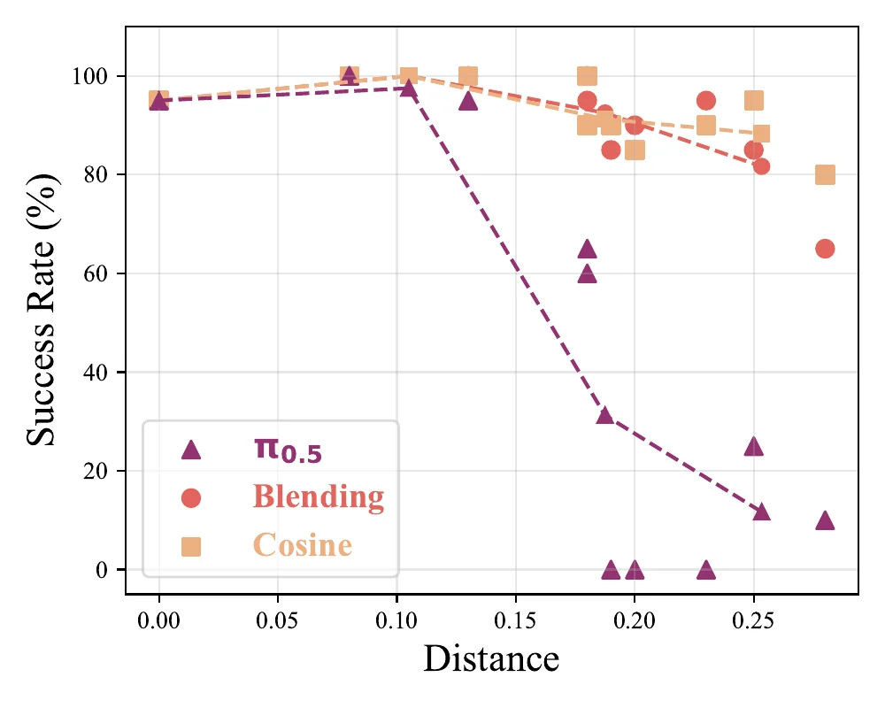
Figure 2:π0.5 task success
rate across 8 perturbed task setups (n = 20) in LIBERO. Dashed trendlines show the performance
trend across perturbation distance.
[PDF]
Perturbation setup
We perturb the distance of the cream cheese object from the original location in the LIBERO-10 task, shown
in Figure 3. Starting from the original cream-cheese placement, we shift the target object to multiple new
positions while keeping the same task instruction and scene setup. These perturbations isolate spatial
generalization failures by changing object position without changing the manipulation objective. The exact
displacement values are listed in Table 1; they span both axis-aligned and diagonal shifts, allowing us to
evaluate whether policy performance degrades smoothly as the object moves farther from the original
training-distribution location.
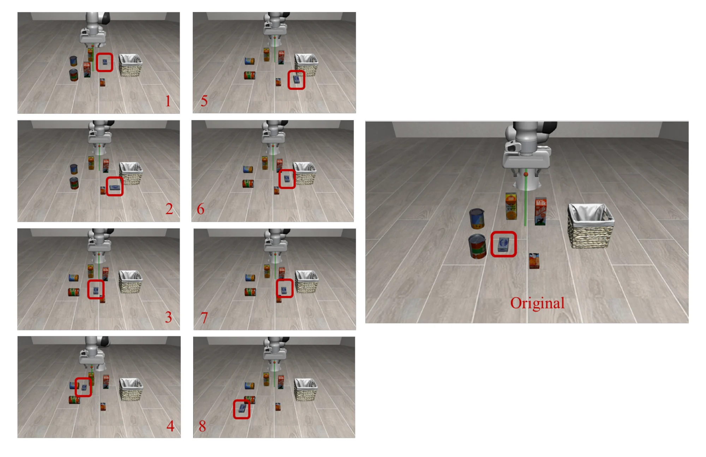
Figure 3: LIBERO task setups for positional perturbations of the
cream cheese object with varying distances from the original position.
[PDF]
Table 1: Distance (m) perturbations of LIBERO
evaluations of target object: cream cheese.
1
2
3
4
5
6
7
8
9
|Distance|
0.08
0.13
0.18
0.18
0.20
0.20
0.23
0.26
0.29
|dX|
0.00
0.10
0.00
0.18
0.13
0.05
0.06
0.20
0.08
|dY|
0.08
0.08
0.18
0.05
0.15
0.23
0.23
0.16
0.28
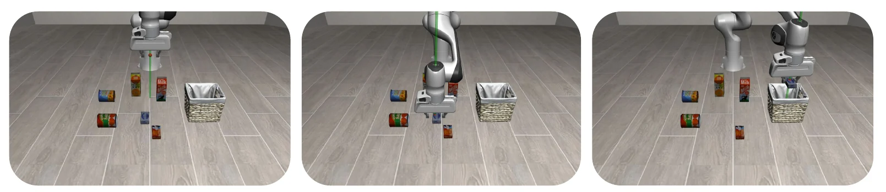
Figure 4: LIBERO task progress for successful task completion on
cream cheese perturbations.
[PDF]
LIBERO-PRO
We use LIBERO-PRO [5] to evaluate whether SAPS improves zero-shot robustness under
structured task and swap perturbations. Across the 10 selected tasks, autonomous
π0.5 achieves only 15.0% mean success, indicating that the policy is
highly sensitive to out-of-distribution changes in object layout and task specification. In contrast, all
shared-autonomy methods recover high performance: Blending reaches 92.6%, Takeover reaches 93.2%, and Cosine
reaches 97.4%, approaching Teleoperation at 98.8%. All shared-autonomy methods significantly improve success
over π0.5 using a one-sided Wilcoxon signed-rank test, with
p = 9.77 × 10−4 for each method. These results suggest that
π0.5 maintains useful low-level manipulation behavior, but corrective
human guidance is needed to maintain correct task behavior under perturbations.
Task setup
The selected tasks include task perturbations, which change the language-conditioned goal or
target object, and swap perturbations, which alter the spatial arrangement of relevant objects in the
scene. These settings test whether the policy can maintain correct task grounding when object identity, target
placement, or task specification become OOD. We select these tasks to cover a range of manipulation behaviors,
including pick-and-place, mug rearrangement, articulated-object interaction, and object substitution,
evaluating whether shared autonomy can recover failures that arise not only from spatial displacement, but
also from incorrect object binding and task-level confusion.
Table 2: LIBERO task specifications used for the
original and perturbed task variants.
Task Name
Task Specification
Original Task
Perturbed Task
task_soup_butter
libero_10_task_6
Place the cream cheese and butter on plate
Replace the cream cheese with soup
swap_soup_cheese
libero_10_swap_4
Place the soup and cream cheese on plate
Swap the target locations of the soup and cream cheese
swap_cheese_butter
libero_10_task_6
Place the cream cheese and butter on plate
Replace the cream cheese with soup
task_mugs
libero_10_task_7
Place the white mug on the left plate and the yellow mug on the right plate
Put the white mug on the right plate and the yellow mug on the left plate
swap_mugs
libero_10_swap_7
Place the white mug on the left plate and the yellow mug on the right plate
Swap the position of the yellow mug
task_choc
libero_object_task_7
Place the orange juice in the basket
Replace the orange juice with chocolate
swap_juice
libero_object_swap_7
Place the orange juice in the basket
Swap the orange juice target placement
task_bowl
libero_spatial_task_6
Place the bowl on the box on the plate
Place the bowl on the cabinet on the plate
swap_bowl
libero_spatial_swap_6
Place the bowl on the box on the plate
Swap the bowl target placement
task_drwr_cheese
libero_goal_task_1
Open the drawer and place the bowl in the drawer
Open the drawer and place the cream cheese in the drawer
Success rate
Table 3: LIBERO-PRO task success rates (%)
(n = 25). Cosine arbitration achieves the highest shared-autonomy mean success rate across the 10
out-of-distribution tasks. Across the 10 tasks, all shared-autonomy methods significantly improved success
rate over π0.5 using a one-sided Wilcoxon signed-rank test:
p = 9.77 × 10−4.
Task
π0.5
Blending
Cosine
Takeover
Teleoperation
task_soup_butter
34
96
96
100
100
swap_soup_cheese
0
90
98
84
94
swap_cheese_butter
32
88
96
94
94
task_mugs
0
90
100
88
100
swap_mugs
10
88
94
92
100
task_choco
26
100
94
94
100
swap_juice
16
94
100
92
100
task_bowl
6
96
100
96
100
swap_bowl
4
92
98
100
100
task_drwr_cheese
22
92
98
92
100
Mean
15.0
92.6
97.4
93.2
98.8
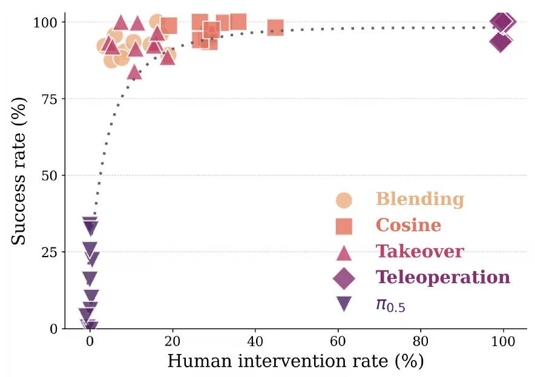
Figure 5: LIBERO-PRO human intervention vs. success rate. With SAPS
methods, similar success rates to pure Teleoperation are achieved for a fraction of the effort from an
operator. The dashed trendline summarizes that a small fraction of human intervention produces large gains
in performance over π0.5.
[PDF]
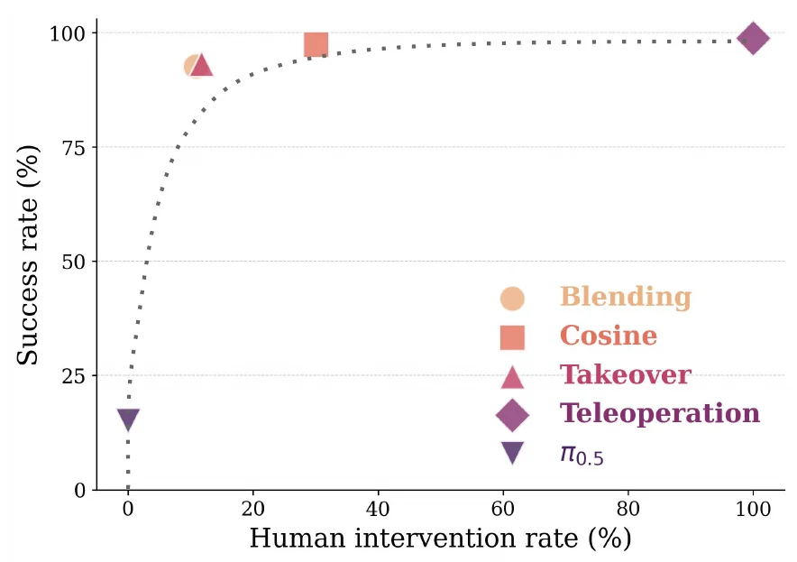
Figure 6: Mean rate of human intervention compared to success rate
across all tasks for each method in LIBERO-PRO evaluations.
[PDF]
Completion time
Completion-time results show that this improvement does not come at the cost of slower execution.
π0.5 often enters incorrect or inefficient recovery behaviors, while
human operators under Teleoperation must manually control the full manipulation sequence with limited depth
perception in simulation. SAPS avoids both failure modes: human input guides task direction, while the policy
continues supplying low-level manipulation behavior. Across the 10 tasks, Blending, Cosine, and Takeover
reduce mean completion time to 11.1 s, 13.0 s, and 13.2 s, respectively, compared to 30.7 s for
π0.5 and 46.0 s for Teleoperation. All three shared-autonomy methods are
significantly faster than both baselines using a one-sided paired Wilcoxon signed-rank test, with
p < 0.001 for each comparison.
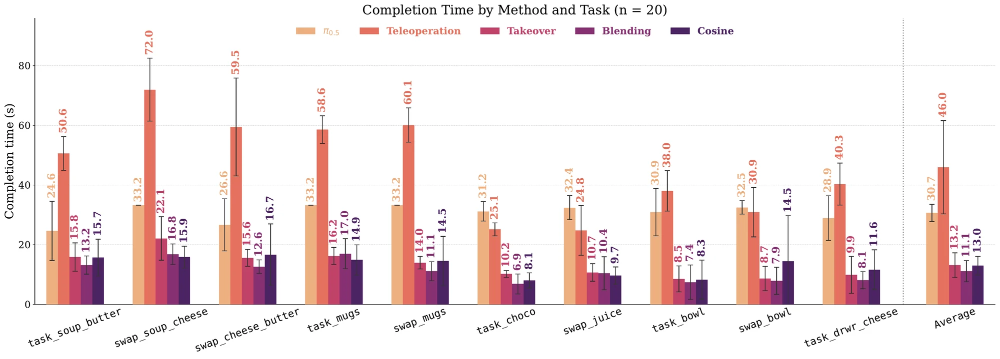
Figure 7: Completion time across LIBERO-PRO simulation tasks for
π0.5, Teleoperation, Takeover, Blending, and Cosine. Shared-autonomy
methods reduce completion time relative to π0.5 and Teleoperation
across all tasks with p < 0.0001.
[PDF]
Human intervention
Intervention rates show that SAPS improves performance without reverting to continuous manual control.
Across LIBERO-PRO tasks, Blending, Takeover, and Cosine only require low intervention rates (10.8%, 11.7%, and
30.0% mean), which remain far below Teleoperation (100%, p < 0.0001). Intervention rates show no
significant correlation with task order (p > 0.09), suggesting that SAPS relies on targeted
corrections rather than continuous operator control.
Table 4: Human intervention rate across LIBERO-PRO
tasks for each shared-autonomy method. Values report mean ± standard error across evaluation episodes
(n = 25). Intervention rate is reported as the percentage of control timesteps with active human
input. Teleoperation is omitted from the table because it requires human input throughout the rollout,
corresponding to 100% intervention for all tasks.
Task
Cosine
Blending
Takeover
task_soup_butter
28.1 ± 8.8
6.0 ± 2.9
7.6 ± 2.7
swap_soup_cheese
19.7 ± 5.4
9.3 ± 1.9
10.7 ± 3.7
swap_cheese_butter
28.3 ± 8.5
4.8 ± 1.3
4.7 ± 2.0
task_mugs
32.1 ± 5.8
19.2 ± 4.1
19.0 ± 4.1
swap_mugs
28.8 ± 9.8
7.3 ± 3.0
10.7 ± 3.6
task_choco
26.6 ± 9.7
16.0 ± 3.4
15.7 ± 4.5
swap_juice
26.7 ± 12.7
10.5 ± 3.0
15.7 ± 3.6
task_bowl
35.4 ± 9.8
17.1 ± 7.1
16.4 ± 10.1
swap_bowl
44.7 ± 12.6
14.1 ± 4.8
11.5 ± 5.5
task_drwr_cheese
29.7 ± 11.4
4.1 ± 1.6
5.3 ± 4.6
Mean
30.0
10.8
11.7
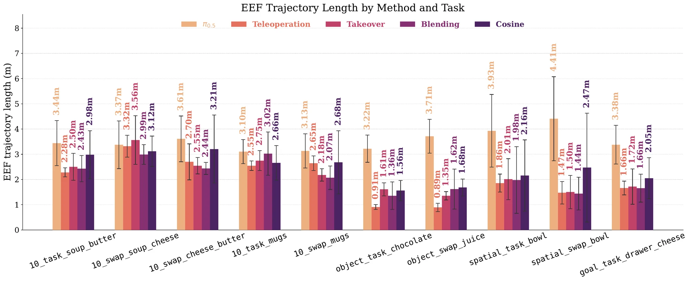
Figure 8: End-effector path length across all methods and tasks
tested in LIBERO-PRO.
[PDF]
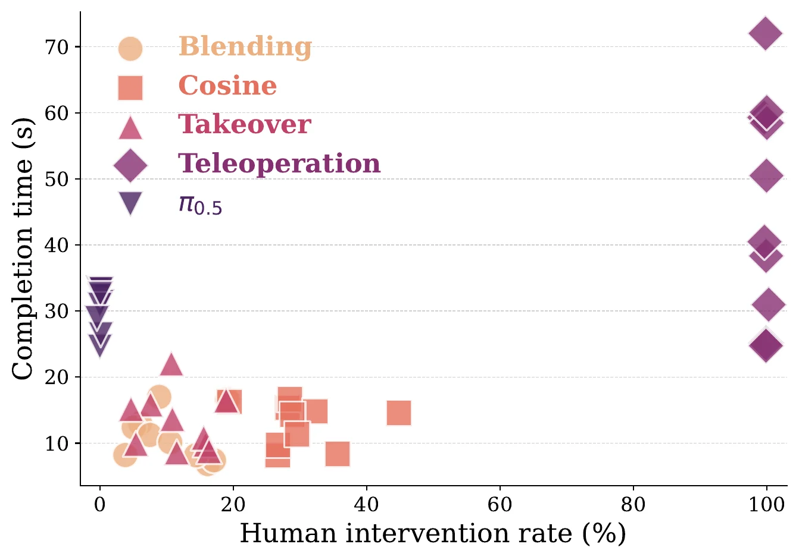
Figure 9: Completion time vs. human intervention rates across all
methods and tasks in LIBERO-PRO. The shared-autonomy methods occupy the upper-left region, reducing
completion time while requiring only partial human input.
[PDF]
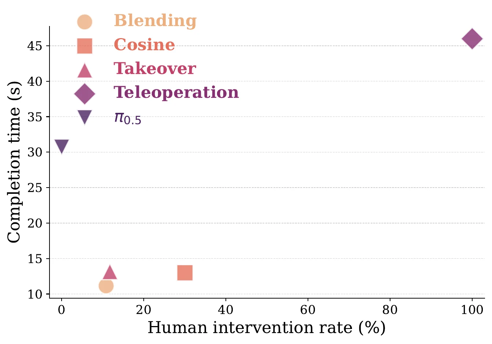
Figure 10: Completion time vs. human intervention rate means across
all methods and tasks in LIBERO-PRO.
[PDF]
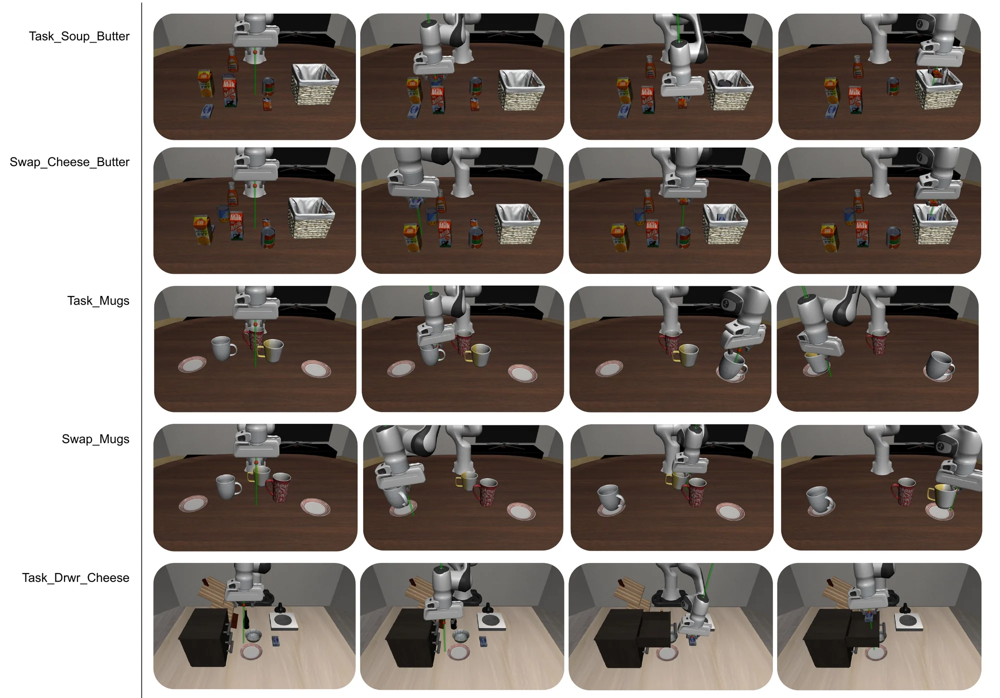
Figure 11: Qualitative task progression for pick and place, mug
manipulation, and drawer manipulation in LIBERO-PRO.
[PDF]
CALVIN
The unguided DP base policy executes autonomously with no human input. ITPS [4] performs
shared autonomy by injecting a human-specified position-target gradient into the policy's diffusion sampling
at every denoising step. DynaGuide [3] steers the policy autonomously, using a separately
trained dynamics model and a classifier to bias diffusion sampling toward desired future states. Our method
requires neither a modification to the diffusion sampler nor an auxiliary model: at each timestep it forms the
executed action as a convex combination of the human's commanded action and the policy's action, with the
blending weight set by the cosine similarity between the two, deferring to the policy when human and policy
agree, and to the human when they diverge.
Despite this simplicity, cosine-similarity shared autonomy outperforms both more complex methods on every
one of the 11 CALVIN subtasks. Cosine arbitration succeeds on 100% of episodes for all eight articulated
subtasks and 70–90% for the three block-lift subtasks, averaging 93% across the suite. The two prior
methods trail substantially, DynaGuide at 80% and ITPS at 66%, and the autonomous base policy reaches only
45%. The gap is widest on the block-lift subtasks, where the base policy and ITPS both fall below 50% while
Cosine arbitration still completes a clear majority of episodes. Notably, ITPS and our method involve human
intervention at comparable rates (roughly 75–85% of timesteps), so the advantage of Cosine arbitration
over ITPS isolates the arbitration mechanism itself rather than the mere presence of a human operator.
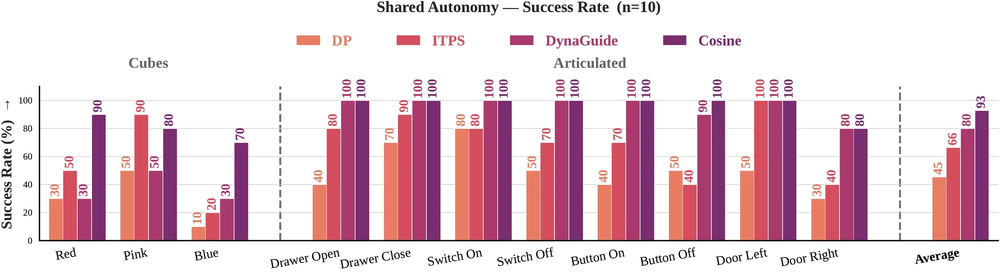
Figure 12: Per-task success rate across the four methods on 11
CALVIN subtasks.
[PDF]
Figure 13 reports the end-effector path length per episode. Cosine arbitration produces the most direct
motions on nearly every subtask, while the autonomous base policy travels 2–3× farther for the
same subtask, showing undirected exploratory motion that the human's coarse directional input efficiently
suppresses under Cosine arbitration.
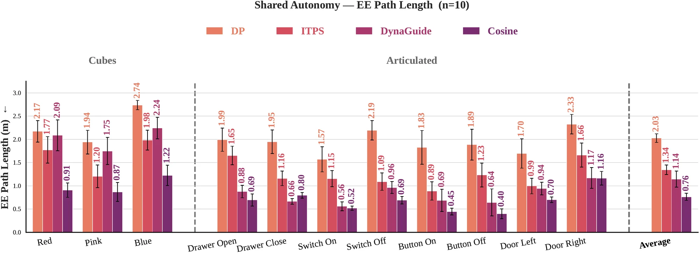
Figure 13: Mean end-effector path length (3-D arc length travelled
per episode, in meters) across the four methods on 11 CALVIN subtasks (n = 10 episodes per task;
error bars: standard error of the mean). Cosine-similarity shared autonomy produces the most direct motions,
consistently the shortest EE paths, while the autonomous baseline (DP) wanders most, often travelling
2–3× farther for the same task.
[PDF]
Figure 14 reports the mean time to complete each subtask, counting a failed episode as the full 400-step
horizon so that the metric reflects an expected time-to-finish rather than rewarding methods for discarding
their failures. Cosine arbitration and DynaGuide finish the articulated task fastest, typically well under 200
steps, whereas the base policy and ITPS are repeatedly dragged toward the 400-step cap by their failures.
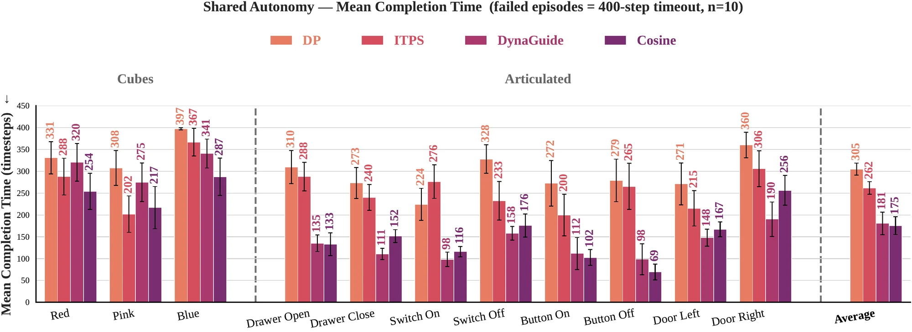
Figure 14: Mean subtask-completion time, in environment timesteps,
across the four methods on 11 CALVIN tasks (n = 10 episodes per subtask; error bars: standard error
of the mean). Each episode contributes the timestep at which the subtask's success criterion is first met,
or the full 400-step horizon if the episode failed — an expected time-to-finish that penalises
low-success methods rather than discarding their failures.
[PDF]
Figure 15 shows a lower intervention rate for ITPS compared to Cosine; however, ITPS has a much lower
success rate (Figure 12), higher completion time (Figure 14), and higher end-effector path length
(Figure 13).
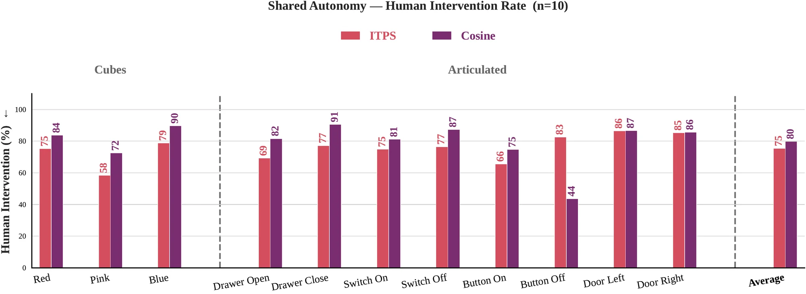
Figure 15: Mean human intervention rate across the two
shared-autonomy methods on 11 CALVIN tasks (n = 10 episodes per subtask), measured as the fraction
of control timesteps with active human input. DP and DynaGuide are omitted (0%, because there is no human in
the loop). ITPS and Cosine differ by only 4.3 percentage points on average (75.5% vs. 79.8%), so the
success-rate advantage of Cosine over ITPS isolates the arbitration mechanism rather than the presence of a
human operator.
[PDF]
Figure 16 illustrates these differences qualitatively on button_off. From an identical initial
state, the base policy and ITPS fail to press the button and run out the full 400-step horizon, whereas
DynaGuide and Cosine arbitration reach and press the button in well under 100 steps. Figure 17 and Figure 18
show examples of successes and failures for CALVIN subtasks.
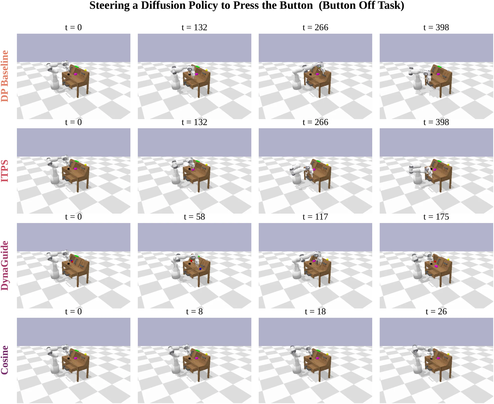
Figure 16: Qualitative rollout comparison on the
button_off subtask for CALVIN with DP. Each row is one method (DP, ITPS, DynaGuide, Cosine);
the four columns are evenly-spaced frames from rollout 5, viewed from a fixed camera. All four rollouts
begin from the same initial state (t = 0). Every frame is labeled with the environment timestep at
which it is taken: DP and ITPS fail and run the full 400 steps without pressing the button, whereas
DynaGuide and Cosine reach the button and complete the task in well under 200 steps.
[PDF]
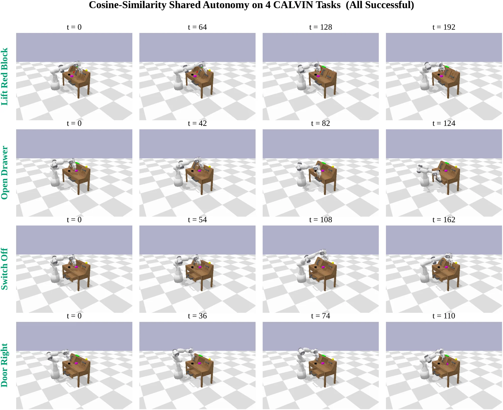
Figure 17: Qualitative rollout comparison for different subtasks in
CALVIN. Shown with just Cosine guiding the DP policy.
[PDF]
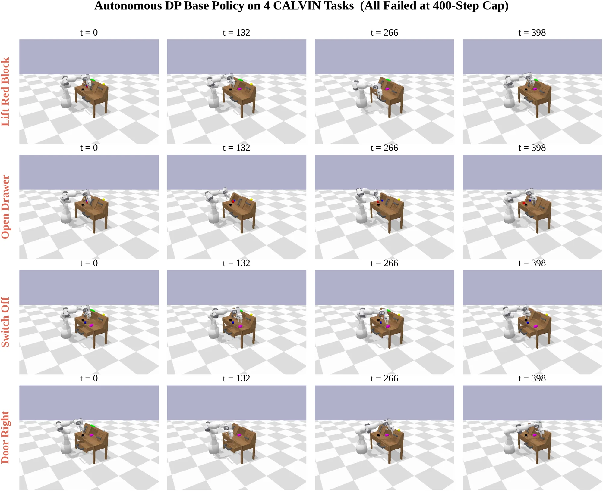
Figure 18: Qualitative rollout comparison for different subtasks in
CALVIN. Shown with only the DP policy. Failures occur due to performing the wrong subtask (seen when
performing the Door Right task), or due to stalling when out-of-distribution.
[PDF]
Real Robot
We perform real-world evaluations to test whether SAPS transfers from simulation to hardware. As seen in
Table 5, π0.5 struggles across real-world tasks, achieving 50% success
on Pick and Place, 25% success on Close Drawer, and 5% success on Open Cabinet. Shared autonomy substantially
improves real-world reliability, with Cosine achieving an average success rate of 98.3% across all three
tasks, and Blending achieving 93.3%. This supports that π0.5 has learned
useful real-world manipulation behavior from DROID, but remains brittle under the specific task layouts and
object configurations, while corrective human input helps recover from these failures.
Completion-time results further show that shared autonomy improves task efficiency relative to
π0.5. Using pairwise Mann–Whitney U tests, both Cosine and
Blending significantly reduce completion time relative to π0.5 across
all three tasks (p ≤ 0.0212), indicating that shared autonomy not only improves success but also
reduces inefficient autonomous recovery behavior. However, completion-time results compared to Teleoperation
are task-dependent: both Cosine and Blending are significantly faster on the Marker Plate (Cosine:
p = 0.0002; Blending: p = 0.0005), but neither method is significantly different from
Teleoperation on Close Drawer or Open Cabinet. This differs from the simulation setting, where Teleoperation
is slower, and likely reflects that real-world operators have direct depth perception and can execute some
tasks quickly under full manual control, although continuous human input is required.
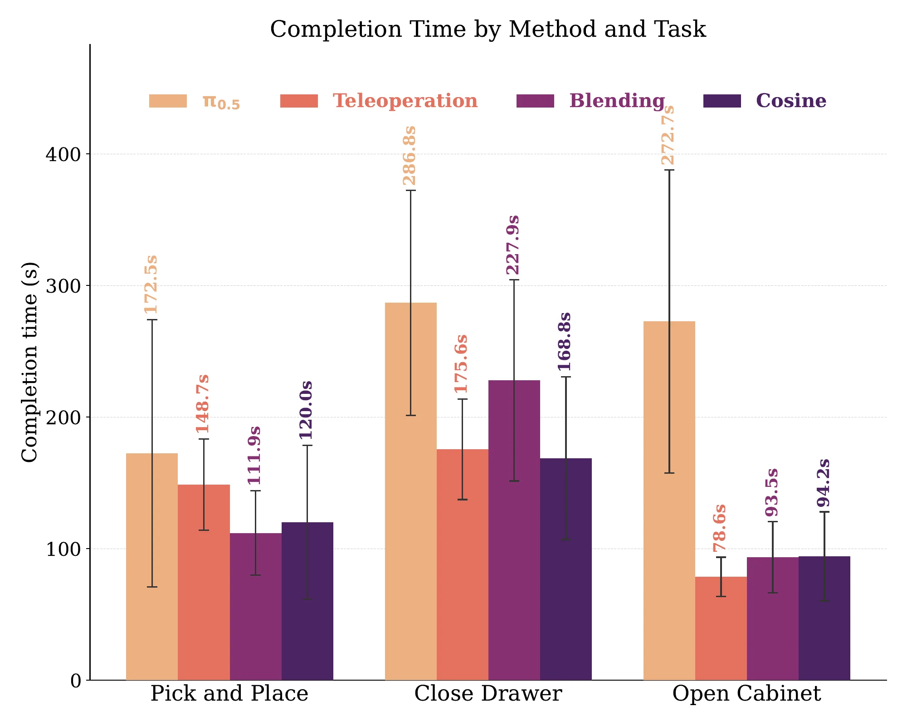
Figure 19: Mean completion time (± std. err.) per task across
shared-autonomy methods (n = 20 episodes/task). Cosine and Blending significantly reduce completion
time relative to π0.5 execution on all tasks (p ≤ 0.0212).
Relative to Teleoperation, both methods are significantly different only on Marker Plate (Cosine:
p = 0.0002; Blending: p = 0.0005), with no significant differences on Close Drawer or Open
Cabinet.
[PDF]
Human intervention
During each real-world hardware rollout, we track the human activation rate to evaluate whether the
shared-autonomy behaviors observed in simulation transfer to physical robot execution. Human activation is
defined as the percentage of control timesteps in which the operator provides input above the activity
threshold. Pure Teleoperation requires human input throughout the entire rollout, corresponding to 100%
intervention. In contrast, Cosine arbitration uses 63.9% intervention on Marker Plate, 54.6% on Close Drawer,
and 68.7% on Open Cabinet, while Blending uses 53.9%, 48.5%, and 66.7% intervention on the same tasks. Both
shared-autonomy methods significantly reduce human intervention relative to Teleoperation across all three
hardware tasks using pairwise Mann–Whitney U tests, with p < 10−15
for all comparisons. These results show that SAPS transfers to real-world manipulation without reverting to
continuous manual control. Instead, shared autonomy enables the operator to provide partial corrective input
while π0.5 continues to contribute learned manipulation behavior during
physical robot execution.
Table 6: Hardware evaluation of mean human intervention
(± std. err.) across shared-autonomy methods (n = 20). Across Marker Plate, Close Drawer, and
Open Cabinet, both shared-autonomy methods significantly reduce intervention relative to Teleoperation
(p < 10−15 for all comparisons).
Task
Teleoperation
Blending
Cosine
Marker Plate
100 ± 0
53.9 ± 19.7
63.9 ± 16.6
Close Drawer
100 ± 0
48.5 ± 12.7
54.6 ± 24.0
Open Cabinet
100 ± 0
66.7 ± 13.6
68.7 ± 14.5
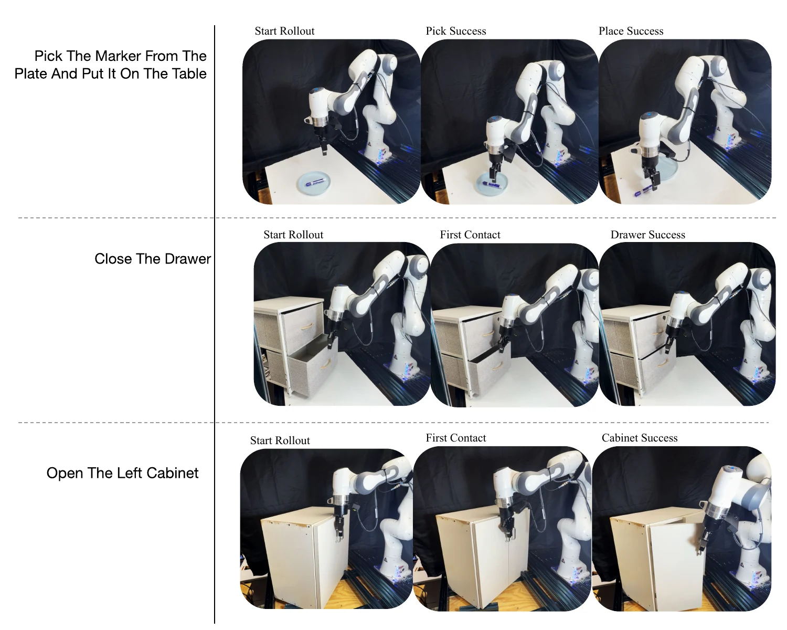
Figure 20: Real-world task progression for successful completion.
[PDF]
Limitations
SAPS requires a human operator at test time, so performance depends on operator timing, skill, and the
teleoperation interface. Because SAPS uses blending with the policy rather than explicit task progress,
intent, uncertainty, contact, or safety estimates, it can fail when the policy is confidently wrong. We
alleviate this effect with Cosine similarity and Takeover, because the user can take over when the policy
action differs from the user's intended action. Our evaluation is limited to a finite set of simulated and
real manipulation tasks; broader LIBERO coverage, more operators, additional embodiments, additional policy
backbones, and more real-world tasks would better characterize improvement using SAPS.
References
K. Black, N. Brown, J. Darpinian, et al. π0.5: A Vision-Language-Action Model with
Open-World Generalization. Proceedings of the 9th Conference on Robot Learning,
PMLR 305:17–40, 2025. [link]
C. Yu, Y. Wang, Z. Guo, et al. RLinf: Flexible and Efficient Large-scale Reinforcement Learning
via Macro-to-Micro Flow Transformation. arXiv:2509.15965, 2025.
[link]
M. Du and S. Song. DynaGuide: Steering Diffusion Policies with Active Dynamic Guidance.
Proceedings of the 39th Conference on Neural Information Processing Systems (NeurIPS), 2025.
Y. Wang, L. Wang, Y. Du, et al. Inference-Time Policy Steering through Human Interactions.
IEEE International Conference on Robotics and Automation, 2025.
[link]
X. Zhou, Y. Xu, G. Tie, et al. LIBERO-PRO: Towards Robust and Fair Evaluation of
Vision-Language-Action Models Beyond Memorization. arXiv:2510.03827, 2025.
[link]